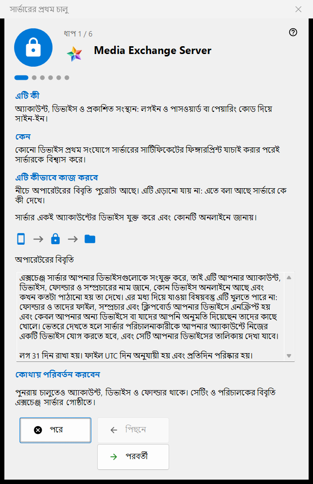
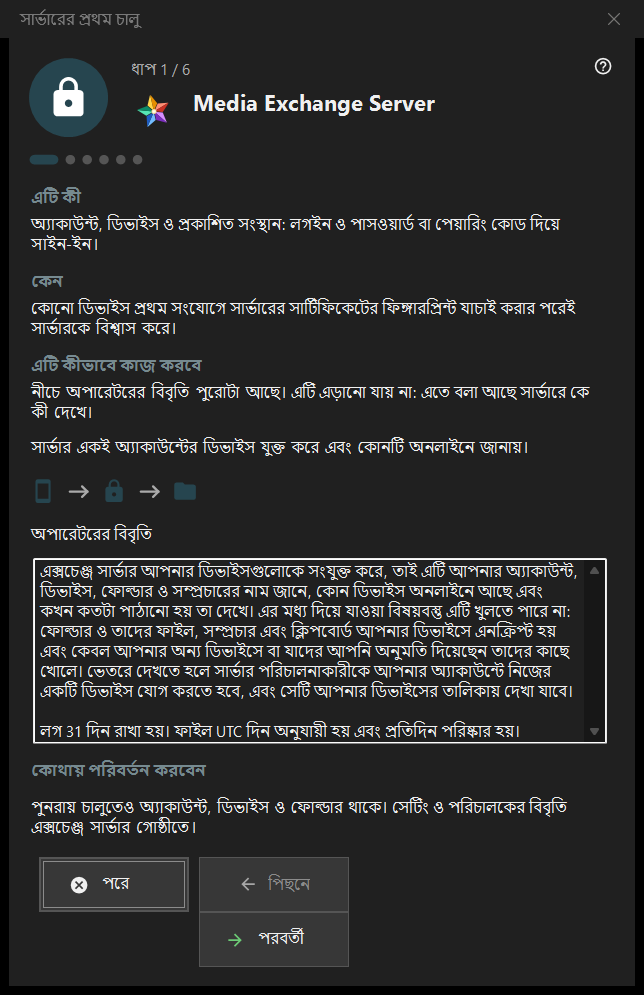

সার্ভারের প্রথম চালু
এটি কীসের জন্য
Share Manager-এর এক্সচেঞ্জ সার্ভার গোষ্ঠীর প্রথমবার চালুর নির্দেশিকা। এটি বোঝায় এই কম্পিউটার কী হয়ে ওঠে, অপারেটরের বিবৃতি দেখায়, পোর্ট, ক্লায়েন্টদের জন্য ঠিকানা এবং প্রথম অ্যাকাউন্ট ঠিক করায়, আর শেষ হয় সার্ভারের অবস্থায়। এক্সচেঞ্জ সার্ভার থাকলে এবং চালু থাকলেই এটি খোলে।


এই ক্রমে
- প্রথম পৃষ্ঠায় অপারেটরের বিবৃতি পড়ুন।
- পোর্ট ও ফায়ারওয়ালের নিয়ম দেখুন।
- যে সার্ভার সংস্করণে সেবা নেই, সেখানে Windows সেবা নিয়ে সিদ্ধান্ত নিন।
- ক্লায়েন্টদের জন্য ঠিকানা পূরণ করুন।
- প্রথম অ্যাকাউন্ট তৈরি করুন।
- সার্টিফিকেটের ফিঙ্গারপ্রিন্ট দেখে নিন এবং শেষ চাপুন।
উপাদানসমূহ
পৃষ্ঠা ও বোতাম
নিচের অংশে ধাপ N / M দেখায়; পিছনে, পরবর্তী ও পরে যেকোনো উইজার্ডের মতোই কাজ করে, আর শেষ পৃষ্ঠায় শেষ বোতাম ম্যানেজারের এক্সচেঞ্জ সার্ভার গোষ্ঠী খোলে। কোনো পৃষ্ঠা বদল না করেই এড়ানো যায়: তখন সার্ভার বন্ধ থাকে বা যেমন ছিল তেমনই থাকে।
অপারেটরের বিবৃতি
সার্ভারে কে কী দেখে তার পূর্ণ বিবৃতি। এটি এড়ানো যায় না। সার্ভার একটি অ্যাকাউন্টের ডিভাইসগুলোকে যুক্ত করে এবং জানায় তাদের মধ্যে কোনগুলো অনলাইনে আছে।
পোর্ট ও ফায়ারওয়াল
ডিভাইসগুলোর মিলিত হওয়ার জন্য একটি পোর্ট এবং তৃতীয় পক্ষের ক্লায়েন্টদের জন্য একটি পোর্ট পরিসর। ডিভাইসগুলোকে সার্ভারের পোর্ট জানতে হয়, তাই পরিবর্তন শুধু নতুন কোডে প্রযোজ্য হয়। ফায়ারওয়ালের নিয়মটি প্রোগ্রামের নামে, তাই পোর্ট বদলালে নতুন নিয়ম লাগে না। এই মানগুলো এক্সচেঞ্জ সার্ভার গোষ্ঠীতে থাকে।
Windows পরিষেবা
শুধু সেই সার্ভার সংস্করণে দেখা যায় যেখানে সেবাটি এখনও নেই। সেবা সার্ভারকে তখনও চালু রাখে যখন কেউ সাইন ইন করে না। চেক বক্স শুধু আপনার সম্মতি মনে রাখে: প্রথম অ্যাকাউন্ট তৈরি হওয়ার পরে একবার অনুমতি চেয়ে সেবা নিবন্ধিত হয়, তার আগে কিছুই ইনস্টল হয় না। এক্সচেঞ্জ গোষ্ঠীর সেবা হিসেবে নিবন্ধন করুন.. পরে একই কাজ করে।
ক্লায়েন্টদের জন্য ঠিকানা
ক্লায়েন্টদের জন্য ঠিকানা (হোস্ট:পোর্ট): হলো সেই ঠিকানা যা দিয়ে অন্য ডিভাইস এই কম্পিউটারে পৌঁছায়। স্থানীয় ঠিকানা প্রস্তাব করুন চাপলে তবেই ঘরটি পূরণ হয়। ঠিকানা ফাঁকা থাকলে শুধু স্থানীয় প্রথম চালু বৈধ থাকে, কিন্তু সম্প্রচার ও ফোল্ডার সংযোগ অন্য ডিভাইস থেকে লুকানো থাকে।
প্রথম অ্যাকাউন্ট
যে অ্যাকাউন্টে প্রথম ডিভাইস সাইন ইন করে। পাসওয়ার্ড তৈরি করুন বা নিজের পাসওয়ার্ড দিন বেছে নিন; এই কম্পিউটারকে অ্যাকাউন্টে যুক্ত করুন এই কম্পিউটারকে তাতে যুক্ত করে। পরবর্তী অ্যাকাউন্ট তৈরি করে, সার্ভার চালু করে এবং সার্টিফিকেট যাচাই করে। পাসওয়ার্ড বিদ্যমান ডায়ালগে একবার দেখানো হয় এবং এই পিসিতে সংরক্ষিত হয় না। অ্যাকাউন্ট তৈরির পরে কোনো ব্যর্থতা হলে অ্যাকাউন্টটি মুছে যায় না।
সার্ভার প্রস্তুত
শেষ পৃষ্ঠা জানায় ঠিকানা, লগইন ও সার্টিফিকেটের ফিঙ্গারপ্রিন্ট কোথায় লেখা আছে, এবং ফিঙ্গারপ্রিন্ট কপি করুন ও সংযোগ স্ট্রিং ও QR কোড.. বোতাম দেয়। প্রথম সংযোগে ফিঙ্গারপ্রিন্ট যাচাই করার পরে ডিভাইস সার্ভারকে বিশ্বাস করে। ফোন যুক্ত করুন (সহায়তা) এবং প্রথম ফোল্ডার প্রকাশ করুন (সহায়তা) লিংক দুটি সংশ্লিষ্ট সহায়তা পৃষ্ঠায় নিয়ে যায়।
ম্যানেজার সেটিংস · SFTP শেয়ারিং সেটিংস · এক্সচেঞ্জ সার্ভার সেটিংস